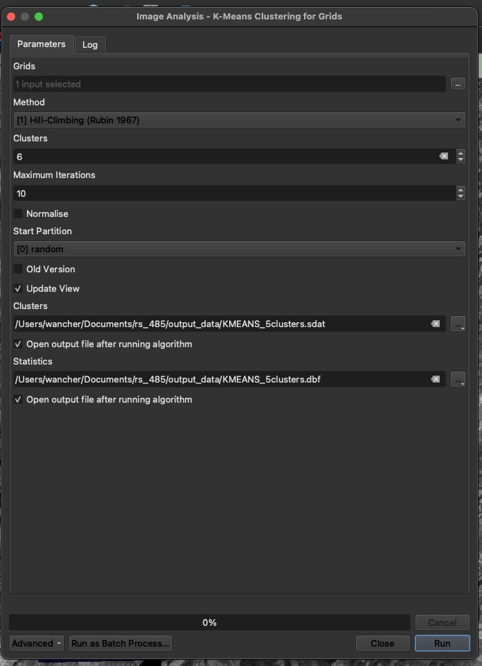

import pipLab three instructions
QGIS
classification
k-means-clustering
Software:
We will use QGIS for this lab and will install the SAGA NextGen plugin and Dzetsaka.
- Inside QGIS select the plugins tab at the top.
- Manage and install plugins
- Make sure you are on the “All” tab and search for SAGA. It is a blue logo: “Processing Saga NextGen Provider. Select it and install.
- Now search for dzetsaka and install
- You can close the pop-up
Please let me know if you have trouble getting these tools installed!
Be sure to start a QGIS project and save it. You will not need to install or load the tool your next time working on the machine. You will need to install it if you work on a new computer next time.
Overview
- You will download Landsat imagery on EarthExplorer of the Mt St Helens area, before and after the 1980 eruption to answer a brief research question of something that interests you (for example: how long did it take for vegetation recovery after the eruption?). The research question will guide the image dates and number of images you download. It’s been almost 45 years, so using Landsat you should be able and ask a pretty interesting question about this. If visible bands are not available you can download any raw bands that are available.
- You will work image by image, and your task is to classify pixels in the image to match a classification schema of interest (i.e., landcover or forest type).
- You will be using your image interpretation skills to generate training data
At this point you can navigate to EarthExplorer, download your Landsat images and then read on.
This lab will be divided into three parts.
Part one: Unsupervised classification.
The tool you are going to run in QGIS will basically group pixels that have similar spectral characteristics to classes or clusters without any additional information from the user (you).
For example: pixels that have really high NIR values could be grouped as one cluster because maybe these pixels have vegetation in them.
Part two: Supervised classification.
- The tool will take additional information (training data) and then it will look at the spectral characteristics of each pixel and group into classes accordingly. You are going to be the source of this training data (more on this below).
Part three: Change detection
- You will run the supervised classification algorithms for your remaining image dates.
Part One
First, consider: what is it you would like to investigate about the landscape? How will you set up your classification schema? Create a classification key with class, value, and color as columns for reference. You have to freedom over what this looks like and it is purely for reference. Use excel, notepad, or word create one. Here is mine:
| Class | Value | Color |
|---|---|---|
| Healthy Forest | 1 | Green |
| Urban | 2 | Gray |
| Water | 3 | Blue |
| Grass | 4 | Yellow |
| Unhealthy Forest | 5 | Brown |
Unsupervised Pixel Based Classification
Prepare the Data:
- Load layers into QGIS. Just use one image date to start
- Create a true color composite or false color composite for reference using the Build Virtual Raster Tool.
- Raster tab (top of the screen)
- Miscellaneous
- Build Virtual Raster
- Select input layers
- Set Resolution to highest
- Place each input file in separate band
- RUN
- Remember that the virtual output you created does not automatically save.
- Right-click the virtual layer
- Export
- Save in the output data as a tif
- Be specific with how you name (i.e., FCC_1979.tif)
Define Area of Interest:
- Create a polygon shapefile around Mt. St. Helens to use as a clipping mask.
- Layer tab (top of the screen)
- Create layer
- New shapefile layer
- Filename is up to you
- Geometry type: polygon
- RUN
- Right-click the shapefile in your layers tab
- Select “Toggle editing”
- Add polygon (see screenshot) then Click somewhere on the screen to begin drawing and complete the polygon by right-clicking
- Right-click and select toggle editing again to turn it off
Clip Raster by Mask:
- Clip your images to the shapefile. The shapefile will act as a cookie cutter.
- Search the processing toolbox for “Clip raster by mask layer”. If you don’t see the toolbox on the right side of QGIS press CTRL + ALT + T.
- Input layer: Landsat raw band raster (you will have to do this for each raw band raster instead of composites because the classification tool will not work for a composite image).
- Mask layer: The shapefile you created
- Clipped mask: Save this in your output data as a TIF (i.e., Landsat_1979_B5_CLIPPED.tif)
- RUN
- Rinse and repeat for the other bands
K-Means Clustering:
Search for K-means clustering for grids in your toolbox window
Input the clipped rasters from above. Set the Number of Clusters based on your classification key (for example, 5 clusters for 5 land cover classes).
Adjust the Iterations to control how many times the algorithm tries to classify pixels (usually around 10-20 iterations). More on the tool
Run the tool. See the parameters I used:

Classify the Output:
After running the tool, the output will be a classified raster. #WOW
Do a quick export of the clusters layer in your layers pane and save it as a tif. It won’t save if you reload QGIS because it is just a temporary file at the moment.
Once you save it, load it into your layers and change the symbology to apply a random color palette or directly adjust the colors according to your KEY!
- Right-click the output clusters layer
- Properties
- Symbology
- Change the render type to paletted/ unique values
- Press classify
- Press apply
- Change the colors to match your key (read below)
Now, use a true color or false color composite as a reference (toggle your layer on and off) to visually inspect the output and match it with the classification key. Take a screenshot of your classified output after setting the colors as close to your key as possible. Do this to the best of your ability.
See if your output looks any better than this but remember this was unsupervised:

Part Two
Supervised Pixel Based Classification
Collect Training Data (take your pick of option 1 or option 2):
- Option 1: You can search the toolbox for a tool called random points in extent
- 10 points minimum per class (so 50 points if you are going for 5 classes)
- input extent: calculate from layer and use the shapefile from step 2 in the unsupervised classification section.
- You can set a mimimum distance in between points. This is up to you.
- Right-click the points layer and select attribute table
- You will need a value column and you will need to adjust the value of each point in your table depending on where it lies within a true or false color image. For this you can reference your key! You should also add a class column that will be the label (i.e., forest, grass, urban).
- Option 2: You can create a new points shapefile and manually place your points
recall step 2 of the unsupervised classification section except geometry type will be points
OK
Change the points symbology so it is a bright color and then start adding points
Now toggle editing and add points using your true or false color as a reference
Each point you add you have the option to set the value or id (for this you will refer to your key and assess what you see visually in true or false color). Essentially this is just a number you assign it 1-5 based on what class it falls in when you look at an image.
Right-click the layer after your save your changes and turn off editing and select attribute table to see how this looks. Feel free to add more columns to match your key. You should also add a class column that will be the label (i.e., forest, grass, urban).
- Considerations:
- The first option is random so you might get some points that fall within vegetation pixels and way more that fall within water pixels so there is a bias
- The second option is tedious but you have full control over placement. Shoot for at least 10 points per class, so 50 points in total if you are trying to classify the image into 5 distinct classes.
Here is how they might be dispersed:
- Option 1: You can search the toolbox for a tool called random points in extent
Install a dependency for dzetsaka
- There is a python library we need in order to run classification using dzetsaka
- Select the plugins tab and select python console
- At the bottom of your screen type this and press enter
Now type this and press enter
pip.main(['install', 'scikit-learn'])WARNING: pip is being invoked by an old script wrapper. This will fail in a future version of pip.
Please see https://github.com/pypa/pip/issues/5599 for advice on fixing the underlying issue.
To avoid this problem you can invoke Python with '-m pip' instead of running pip directly.Requirement already satisfied: scikit-learn in /Users/wancher/Documents/thesis/env/lib/python3.13/site-packages (1.6.1)
Requirement already satisfied: numpy>=1.19.5 in /Users/wancher/Documents/thesis/env/lib/python3.13/site-packages (from scikit-learn) (2.2.2)
Requirement already satisfied: scipy>=1.6.0 in /Users/wancher/Documents/thesis/env/lib/python3.13/site-packages (from scikit-learn) (1.15.1)
Requirement already satisfied: joblib>=1.2.0 in /Users/wancher/Documents/thesis/env/lib/python3.13/site-packages (from scikit-learn) (1.4.2)
Requirement already satisfied: threadpoolctl>=3.1.0 in /Users/wancher/Documents/thesis/env/lib/python3.13/site-packages (from scikit-learn) (3.5.0)
[notice] A new release of pip is available: 24.3.1 -> 25.0 [notice] To update, run: pip install --upgrade pip
0- Train a model:
In the processing toolbox select dzetsaka
Classification tool
Train algorithm. Here are the parameters used (you can you a composite image with this tool):
- Predictions from a trained model:
- Once you have saved your models for each band you are ready to make predictions (I saved three models for bands 6, 5, and 4 from a Landsat 1 image)
- Open the processing toolbox –> dzetsaka
- Classification tool
- Predict model
- Input raster: Landsat B4 clipped to start
- Model learned is my B4 model from the above step
- Output raster is saved in output data folder as a tif
- Confidence raster is saved in output data folder as a tif with a unique name
- RUN
- Change layer symbology to match your key
Questions for parts one and two:
- What is your research question?
- Did the unsupervised or supervised classification perform better and what makes you say so?
- What is the K-Means clustering algorithm doing? Check out google or the QGIS documentation for the tool
- What is the K nearest neighbors algorithm doing?
- What kinds of biases could be introduced in the training process?
- How was your training data distributed spatially? Did you favor a particular area of the image?
- Around how many observations did you have for each class?
- What input raster bands did you use when predicting?
- Insert screenshots of the unsupervised result, and your supervised results with brief figure captions.
Part Three
Change Detection
If you think back to lab 2; you performed change detection using R and indexed images. For example, NDVI change between 2019 to 2024.
Using your additional image dates you will run the supervised classification tool again, using the same training data.
You will perform post classification change detection, and this can be done a few different ways. For example we can obtain the count of pixels in each class and multiply this by pixel area to see how the surface area of a class changes over time. Or it could be framed in terms of class change (i.e., healthy forest to unhealthy forest). Just using your supervised classification maps for each image date you will toggle through them and write 2-3 sentences about the change you see visually.
Now you can right-click each of your output supervised layers and select properties then histogram and compute histogram. Frequency (on the y axis is the pixel count and Pixel value is the class it belongs to). Take the frequency of the pixels in each class divided by the total to get proportion of the image that belongs to each class (this can then be multiplied by pixel area). Or you might find other ways to get pixel counts.
This last part will be up to you to create additional supervised images (however many help your research question), and then create some type of summary of the pixels in each class and how this has changed over time. Feel free to use google to find ways to get pixel counts of a raster or create attribute tables for a raster. Please submit some type of visualization of the change. Whether it is a graph or a map, don’t overburden yourself but try to do a little research about how people typically do this in QGIS or excel.
Questions for part three:
- What did you learn?
- What are the limitations?
- How would you do this differently next time?